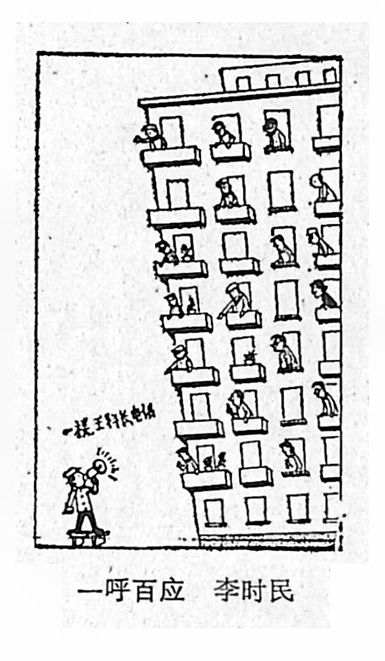

李时民 《人事》1988年第3期（总第30期），第45页
一呼百应
One Call, a Hundred Answers
- Text in the drawing
- 一楼王科长电话
Telephone for Section Chief Wang, ground floor! - Description
- A caretaker below an apartment block shouts through a megaphone that there is a telephone call for Section Chief Wang on the ground floor — and men lean out of almost every window and balcony in the building to answer.
- Note
- The building is full of section chiefs named Wang: a jab at the inflation of cadre ranks. 一呼百应, “one call and a hundred answer,” normally praises a leader's authority.
- Artist
- Li Shimin 李时民
- Published in
- 《人事》1988年第3期（总第30期）, p. 45
- Themes
- Overstaffing and overlapping agencies · Promotion

Cite
Li Shimin, “一呼百应” [One Call, a Hundred Answers], Renshi (Personnel) 《人事》, 1988, no. 3, p. 45.